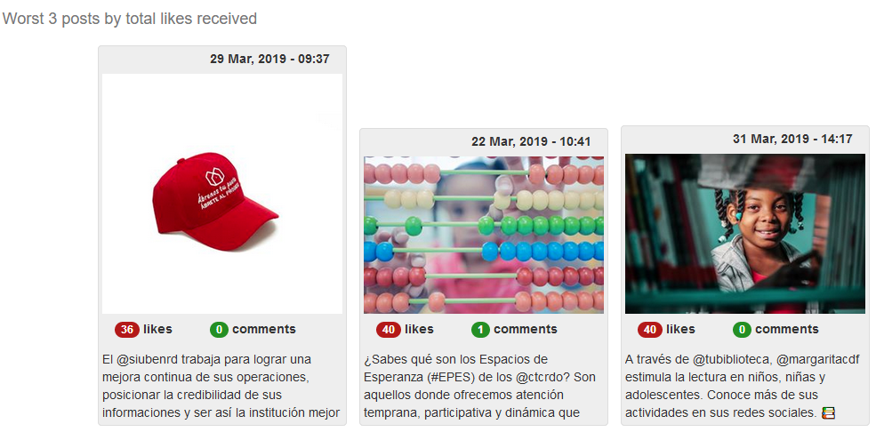
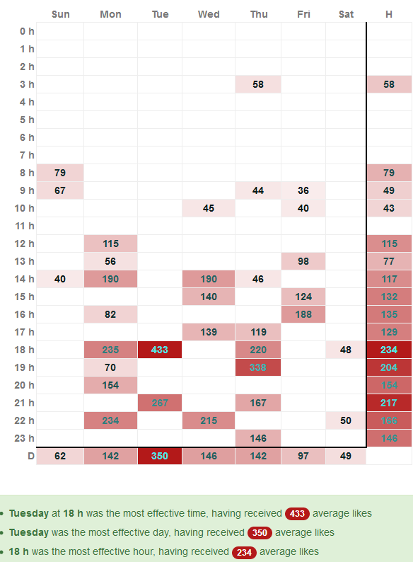

Dashboard Gabinete Digital
Dashboard
Instituciones
Vicepresidencia
Redes Sociales
Portal web
Progresando con Solidaridad
Redes Sociales
Portal web
CTC
Redes Sociales
Portal web
Bibiblioteca Infantil y Juvenil
Redes Sociales
Portal web
Adess
Redes Sociales
Portal web
Siuben
Redes Sociales
Portal web
Gabinete Social
Redes Sociales
Portal web
Proyectos
Matemática Divertida
Redes Sociales
Portal web
Cultura Ciudadana
Redes Sociales
Portal web
OPSD
Redes Sociales
Portal web
Manos Dominicanas
Tiempo Solidario
Bien por ti
Servicios
Análisis RRSS
Análisis SEO
Análisis HashTag
Cuentas a etiquetar
Tel de contacto
Preguntas frecuentes
Tiempo Solidario Instagram Miscelaneos
Miscelaneos
sidebar
Dashboard
Home Tiempo Solidario
Redes sociales
Facebook
miscelaneos
Facebook
Post con mejor engagement
Post con menor engagement

Mejores horarios
